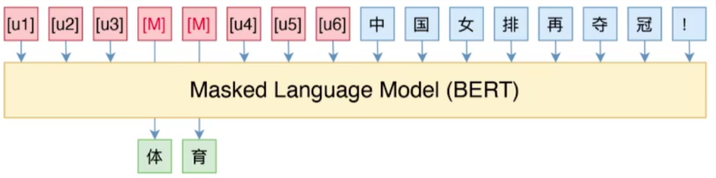
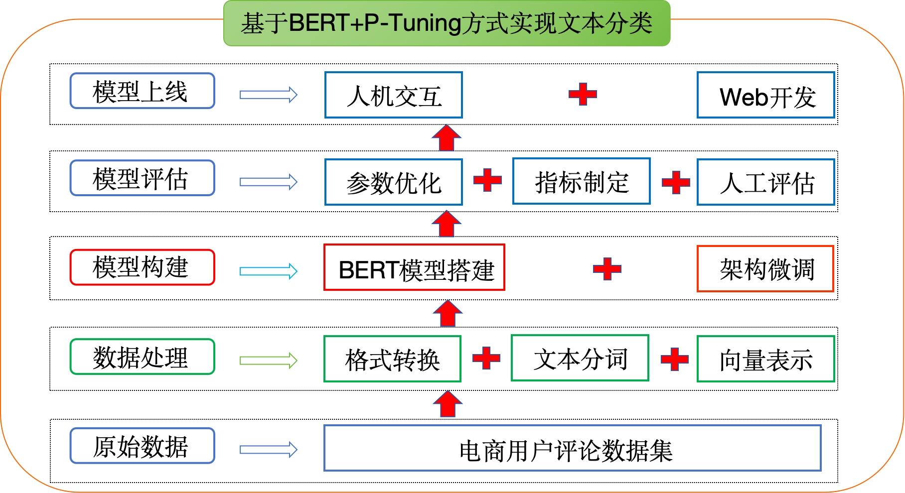
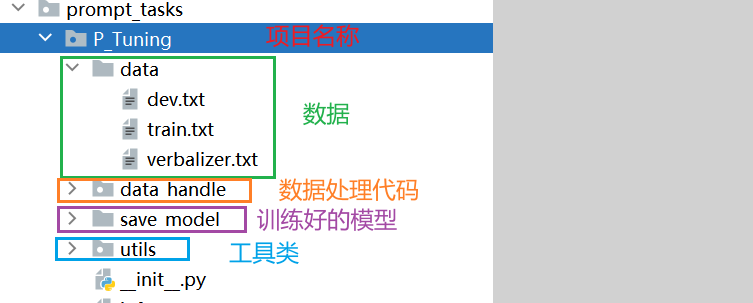

基于BERT+P-Tuning方式文本分类介绍¶
学习目标¶
- 理解P-Tuning方式的思想
- 了解基于BERT+P-Tuning方式实现文本分类的整体项目架构
1 项目背景¶
- 本章我们将以"电商平台用户评论"为背景，基于BERT+P-Tuning（软模版）方法实现评论文本的准确分类。
- 通过深入了解用户对不同商品或服务的评价，平台能够快速回应用户需求，改进产品和服务。自动分类也为个性化推荐奠定基础，帮助用户更轻松地找到符合其偏好的商品。同时，这项技术降低了运营成本，替代了繁重的人工处理工作。通过评论分析，电商平台还能迅速获取市场反馈，为商家提供有针对性的数据，助力制定精准的运营策略。
2 P-Tuning回顾¶
- P-Tuning（Pattern-Tuning）是一种连续空间可学习模板，PET的目的解决PET的缺点，使用可学习的向量作为伪模板，不再手动构建模板。

以新闻分类任务为例：原始文本：中国女排再夺冠！P-Tuning可学习模板：[u1] [u2] …[MASK]…[un], Label：体育/财经/时政/军事
- P-tuning 的核心思想是：用一个小的可训练模块把一组“连续提示向量”生成并插入到原始输入 embedding 中，令**冻结的预训练模型**在下游任务上产生正确输出，训练时仅更新 prompt encoder（或提示向量），从而实现低成本高效的调优。
3 环境准备¶
本项目基于 pytorch + transformers 实现，运行前请安装相关依赖包：
- python==3.10
- transformers==4.40.2
- torch==2.5.1+cu121
- datasets==3.6.0
- scikit-learn==1.7.0
4 项目架构¶
- 项目架构流程图：

- 项目整体代码介绍：

小结总结¶
本章节主要介绍了项目开发的背景及意义，明确了项目的整体架构，并对项目中整体代码结构进行了介绍。